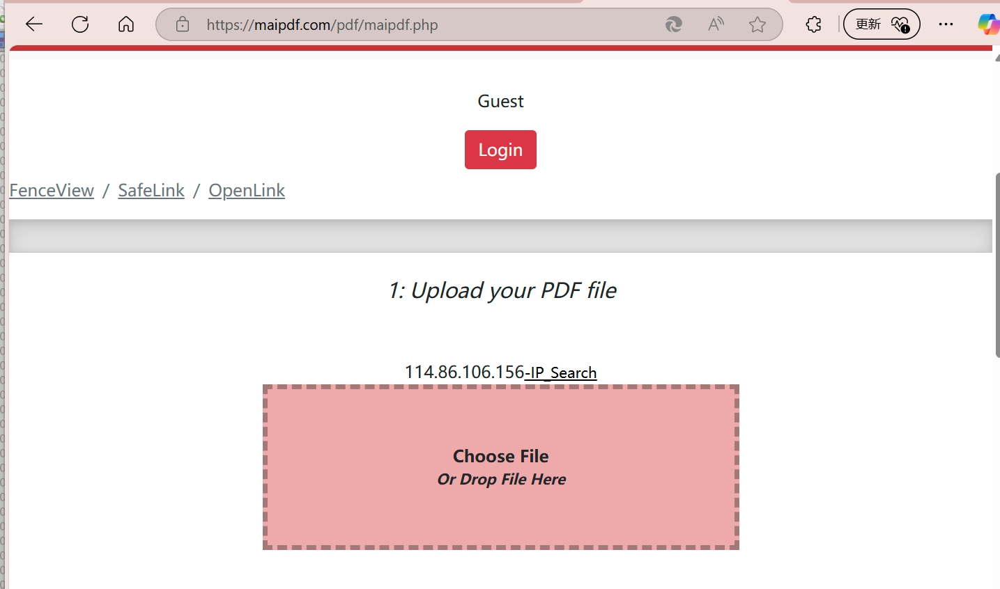

MaiPDF: The Ultimate PDF Tracking and Analytics Solution

üöÄ Core Features of MaiPDF
üìä Advanced Access Analytics
MaiPDF provides comprehensive tracking capabilities including:
- IP Address Logging - Precise visitor identification and geolocation
- Timestamp Recording - Detailed access time documentation
- View Count Statistics - Track document popularity and engagement
- Geographic Intelligence - Location-based visitor analytics
- Device Information - Browser and device type detection
üîê Enterprise-Grade Security
Multi-layered document protection system:
- Dynamic watermarking technology
- Access permission controls
- Email verification requirements
- Screenshot prevention alerts
- Download and printing restrictions

üìã Step-by-Step Guide to Using MaiPDF
Step 1: Upload Your PDF Document
Start by uploading your PDF file to the MaiPDF platform. The system supports various file sizes and formats with fast processing capabilities.
Step 2: Configure Tracking Settings
Customize your document's security and tracking preferences:
- Set access permissions and restrictions
- Configure watermark options
- Enable email verification requirements
- Choose security level settings

Step 3: Generate Trackable Links
MaiPDF creates unique tracking links and QR codes for easy sharing across multiple platforms.

Step 4: Share and Distribute
Share your trackable PDF links through various channels:
- Email campaigns
- Social media platforms
- Instant messaging apps
- Website embedding

Step 5: Monitor Access Analytics
Track and analyze visitor behavior through comprehensive dashboard analytics.

üîç Advanced Features Deep Dive
Dynamic Watermarking Technology
MaiPDF's intelligent watermarking system adds personalized, dynamic watermarks that adapt to each viewer, making document tracking more precise and secure.

Email Verification System
Implement email-based access control to ensure only authorized individuals can view your sensitive documents.

Access Permission Management
Fine-tune document permissions with granular control over viewing, downloading, and printing capabilities.

Real-time Settings Modification
Update document settings even after sharing, providing flexible control over access permissions.

üìä Analytics and Reporting
Comprehensive Access Reports
Generate detailed reports showing:
- Visitor IP addresses and geographic locations
- Access timestamps and duration
- Device and browser information
- Referrer source tracking
- Download and interaction statistics
Watermark Information Tracking
Query specific watermark codes to trace document access and verify authenticity.

üéØ Use Cases and Applications
✅ Perfect For:
- Legal document sharing
- Business proposal tracking
- Educational material distribution
- Marketing campaign analysis
- Confidential report sharing
- Contract negotiation monitoring
⚠️ Consider:
- Privacy compliance requirements
- User consent for tracking
- Regional data protection laws
- Network security policies
üõ°Ô∏è Security and Privacy Features
Document Protection
MaiPDF implements multiple security layers:
- No-Download Mode - Prevent unauthorized file downloads
- Print Restrictions - Control document printing capabilities
- Screenshot Detection - Alert when screenshot attempts are made
- Time-based Access - Set expiration dates for document access
üîí Privacy and Compliance
When using MaiPDF for tracking, ensure compliance with local privacy laws and regulations. Always inform users about data collection practices and obtain necessary consent.
üìà Benefits of Using MaiPDF
üéØ Business Intelligence
Gain valuable insights into document engagement, reader behavior, and content effectiveness.
üõ°Ô∏è Enhanced Security
Protect sensitive documents with advanced security features and access controls.
üì± Cross-Platform Compatibility
Works seamlessly across desktop, mobile, and tablet devices.
üîÑ Real-time Updates
Receive instant notifications and updates on document access and interactions.
üöÄ Getting Started with MaiPDF
Ready to Transform Your PDF Management?
MaiPDF revolutionizes how businesses and individuals manage, share, and track PDF documents. With powerful analytics, robust security features, and user-friendly interface, it's the complete solution for intelligent document management.
Visit MaiPDF today and start tracking your PDF documents like never before!

üìù Conclusion
MaiPDF represents the future of PDF document management, combining advanced tracking capabilities with enterprise-grade security. Whether you're a business professional, educator, or content creator, MaiPDF provides the tools you need to understand and protect your document sharing activities.
The platform's comprehensive analytics, flexible security settings, and user-friendly interface make it an invaluable tool for anyone serious about document intelligence and protection.
← Back to Blog Home